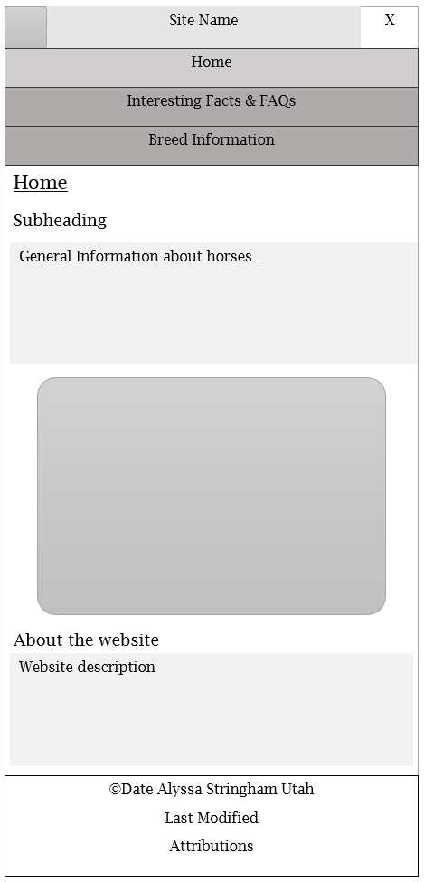
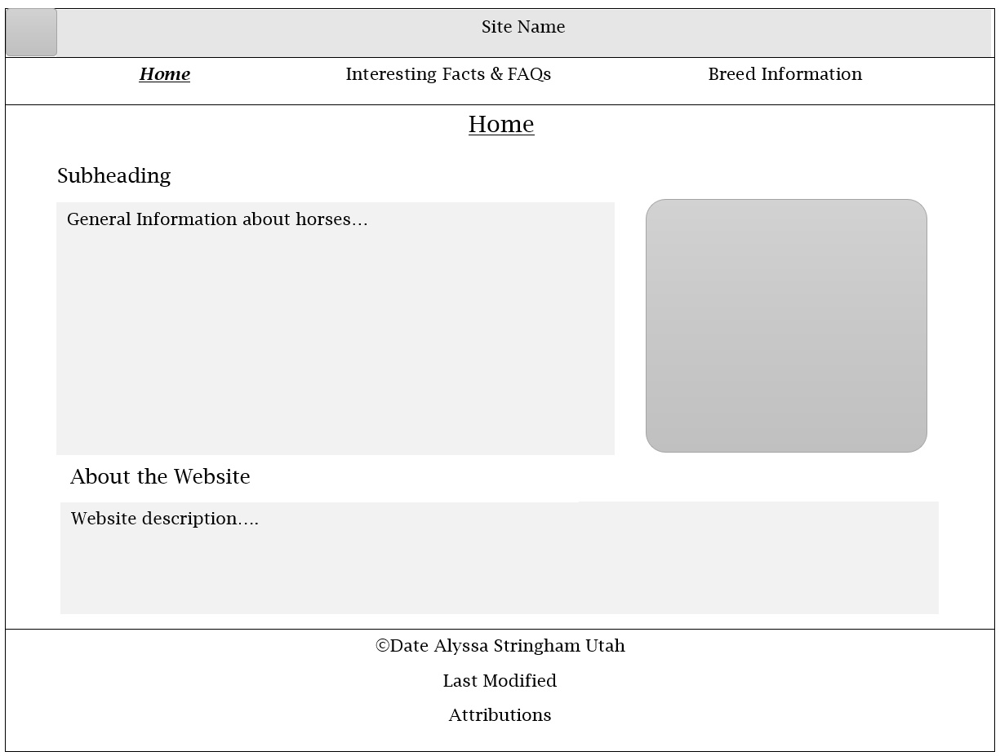

Site Plan
I chose the name 'Equine Answers' because the website is about horses (a member of the Equus genus) and aims to answer some of the questions people may have about horses.
Site Purpose
The purpose of this site is to provide information about horses. The home page will contain general information; the horse breeds page will contain information about specific breeds. The interesting facts & frequnetly asked questions page will contain some records, interesting facts, and asnwers to common questions. There will also be a form to submit a question on this page.
Scenarios
What is the most popular breed of horse in the United States?
How many horses live in the United States?
What are some interesting facts about horses?
Color Scheme
The main background color will be a light tan (#fff8ec). The font will be a dark brown (#371a0d). The accent colors will be various shades of green. These will be used as heading backgrounds and borders as needed.
Typography
Heading
Subheading
Main Text
Wire Frames

